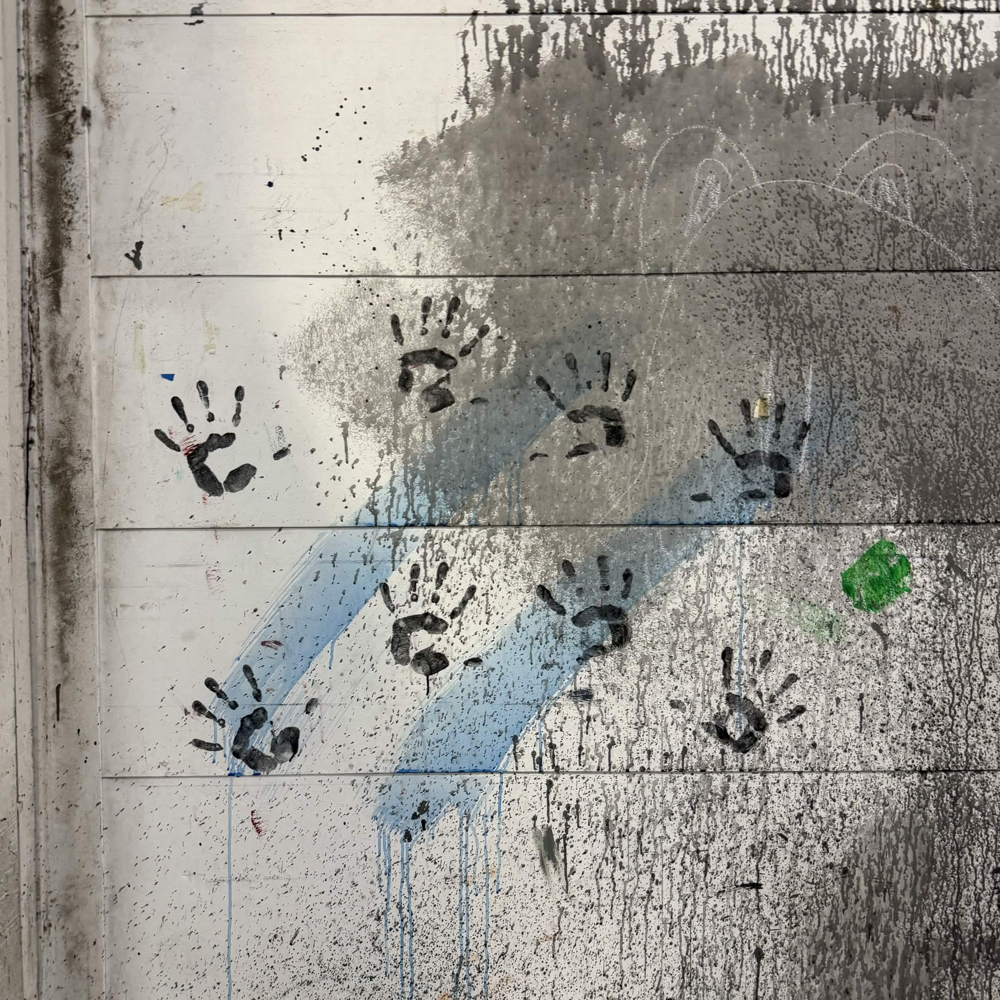

04-07-26
Video killed the Photo (but photo still mogs)
People love photo, Dod't get me wrong. But the advent of video has really taken the stage
for the past... Almost a century, wow!
But it's important not to leave our good friend photo behind. There are a lot of reasons of course,
however a really important one is-
It's Godd*amn Easier
Okay so I'm speaking from my own personal experience, obviously. But I mean come on, theres so much
more to consider than in photography! Motion matters now, which, yes, opens up a lot of possibilities, but you have to be careful!
A moving object in the background can be distracting, a shaky hand can make the video unwatchable!
And then there's audio. Someone wise once said: people can forgive bad video, but they won't forgive bad audio.
If you're filming outside, a windy day can make it completely impossible, and you better make sure everyones quiet on set.
So why go through the trouble?
There's so much more you can express through video. With the troubles of motion and audio come's opportunity.
And one of the biggest benefits, a single video can have multiple different shots!
I used that to my benifit in some video I shot just last week. The video files are too big to put here, but looks at
these two shots.


My goal with this video was all about contrast. There are several shots, alternating between close up shots
of the subject interacting with nature, filled with colours. THen it cuts to a far shot, the subject forlonly
meandering among dreary concreate architecture.
The contrast shows the two ends of scenery, of the world. It shows that you can find beauty even in harsh places.
The presence of the subject acts as a connecting thread, tying both themes together.
It's hard to tell from these two still shots, but so much is added by the timing of the shots and the cuts, the motion of
the camera as it pans from human to nature, or is held gruelingly still above the grey concrete. This
is only possible because of video!
Wow you make it look so simple!
Aww thanks, you flatter me 😚.
But it wasn't without hardship. Finding a good place for the shots was of course a trial, but that's present with photography too.
You have to think so much more about spacing when working with video, too! The subject can, and often will, move across you're shot,
you have to make sure they maintain a pleasing position the whole time! Eiither through choreagraphing their movements, or subtle movements
of the camera.
It wasn't all bad though, I learned about the benefits of video, the art that you can make through, and that's the
most important thing. Next stop is video editing which opens the scope even more! I'm excited to show you
what my mind can come up with :3.
03-11-26
Express Your Creativity with Game Dev!
Video games are art.
Let's get that truth out there first, because it is a truth.
Video Games combine the artistic mediums of art and writing and sound, and add in
a new element of interactivity. Not only can you tell beautiful and artistic stories in the medium,
but there are entires classes of art that can only be told through this medium.

If you want a way to express yourself, video games are a perfect outlet!
"But I don't know how to code/draw/compose!"
That's okay! You don't have to do it all! Game development, more often than not,
is a team task! If you've just got one skill, you can make massive contributions.
And there's more applicable skills than you think! SO much goes into game development,
if you can do one of the following:
- Visual Art!
- Sound Design!
- Music Composition!
- Programming!
- Leadership skills!
- Concept design!
- Literally just coming up with ideas!
then you're perfectly ready to contribute and to express yoursef!
"But How Can I Find a Team?"
Ohohohohoho I have the perfect thing for you! (given that you're an SFSU student which in hindsight I guess is a bit of a hurdle)
The SFSU Game Dev Club is exactly what you need!

The Game Dev Club is a place for diverse and artistic people to gather and express their creativity. Join one of
several project groups and make your contribution! Everyone is look for team members of all disciplines! If you've
got a cool idea, we're desperate for more project leads too! And we do more than just these big projects.
We've got:
- Game Jams!
- Board Game Nights!
- Online Game Nights!
- A Minecraft Server!
- Collabs with other clubs like the Queer Alliance and Gaming Gators!
It's just a great place to hang out! You'll like it here, I promise.
"Wow that sounds so awesome, how do I join?"
All you gotta do is show up! The best place to stay up to date is to join the Discord server.
Here, you can interact with the other club members, get announcements on when and where the club is hosting events,
and find a list of all of the active projects you can join!
For example, I'm leading a very artistic project: a game called "Dream Catcher".
It's a roguelite pokemon-style rpg taking place within the realm of dreams~. If that sounds intereseting to you, I'd be happy to have you!
Game Dev is Art!
03-04-26
Innocent Art, or Horrifying Omen?
Never believe what a photo will tell you. It can and will lie to you.
Take a look at this image below.
.jpg)
It's terrifying! Horrifying blood stained hands litter the wall, the world is dark and cold, vision is narrowing. This is a sight you'd expect to see
in a horror movie, or a haunted house!
But this wasn't found in a haunted house. This was on the wall of a theatre in the creative arts building. Nothing but some quirky
theatre kids having some fun. So why was it so scary?
Because I lied to you
You should hopefully be able to tell that this image was edited. Here's the original:

It's kinda cute! I mean, maybe you still have the dark impression from the earlier photo in your head, but it's clearly less sinister!
So how did it change? Whats different?
- Desaturation
All colour has been sucked right out of the image
- High-Contrast
The brights are brighter, the darks are darker
- Vignette
Narrow vision, blur the edges.
Each of these changes contributed to making this image scarier. With all the colour gone, all possible sources of joy have been removed.
The high contrast makes the image Incredibly eye-catching, striking, almost hitting that fight-or flight response. The vignette encloses the space,
turning the image claustrophobic, almost suffocating.
The meaning has completely changed, turning in innocent theatre art into something threatening
"Why would you do this to me?"
Because lying to people is fun!
The art of photo-editing is all about the art of lying. Taking what is true, and presenting a twisted reflection.
In doing so, it holds up a mirror to ourselves, and shows the inner mind of humanity. There's nothing that makes this image
inherently scary, it's our experiences that colour our perceptions.
I took a lot of photos on that day, but as I walked past this wall, my mind was immediately full of ideas.
I saw in my head how I could twist this sight into something unsettling to the viewer.
I think i succeeded!